Niggli cell¶
Algorithm to determine Niggli cell¶
Reference¶
- A Unified Algorithm for Determining the Reduced (Niggli) Cell, I. Krivý and B. Gruber, Acta Cryst., A32, 297-298 (1976)
- The Relationship between Reduced Cells in a General Bravais lattice, B. Gruber, Acta Cryst., A29, 433-440 (1973)
- Numerically stable algorithms for the computation of reduced unit cells, R. W. Grosse-Kunstleve, N. K. Sauter and P. D. Adams, Acta Cryst., A60, 1-6 (2004)
Algorithm¶
A0¶
Define following variables as
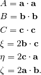
They are elements of metric tensor where the off-diagonal elements are doubled. Therefore the metric tensor is represented as
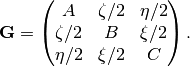
 ,
,  , 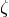 are sorted by their ranges of
angles as shown below.
, 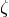 are sorted by their ranges of
angles as shown below.
| Angle | value |
|---|---|
| Acute | 1 |
| Obtuse | -1 |
| Right | 0 |
These values are stored in variables 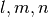 as follows.
- Set initially 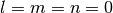.
- If 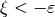, 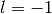.
- If 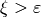, 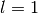.
- If 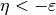, 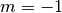.
- If 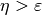, 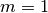.
- If 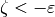, 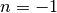.
- If 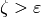, 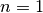.
A4¶
If 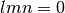 or 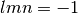:
- if else

- if else
 if else
if else 
If 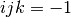, then overwrite 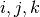:
- if 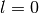
- if 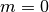
- if 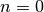
Run A0.